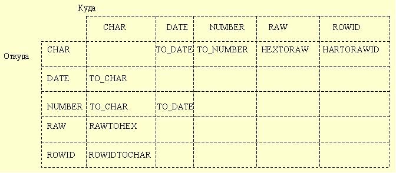

Типы данных
Каждая константа и переменная имеет ТИП ДАННЫХ, который специфицирует ее формат хранения, ограничения и допустимый интервал значений. PL/SQL предусматривает разнообразие предопределенных скалярных и составных типов данных. СКАЛЯРНЫЙ тип не имеет внутренних компонент. СОСТАВНОЙ тип имеет внутренние компоненты, которыми можно манипулировать индивидуально.
Рассмотрим скалярные типы данных ORACLE (см.табл. 3):
- CHAR ;
- VARCHAR2 ;
- VARCHAR ;
- NUMBER;
- DATE ;
- LONG ;
- RAW ;
- LONG RAW ;
- ROWID ;
- MLSLABEL ;
- BINARY_INTEGER .
Таблица 3 - Типы данных
Тип данных | Таблицы | Переменные PL/SQL | Комментарии |
BINARY_INTEGER NATURAL POSITIVE | [-231-1; 231-1] (-2147483647 .. 2147483647) (0 .. 2147483647) (1 .. 2147483647) | Целые числа со знаком | |
NUMBER [(точность, масштаб)] DEC DECIMAL DOUBLE PRECISION FLOAT SMALLINT INT / INTEGER NUMERIC REAL | [10-130;9.99*10125] До 38 значащих цифр | Точность - общее число цифрМасштаб - число цифр справа от десятичной точки | |
Boolean | НЕТ | NULL, TRUE, FALSE | Не принимает параметров. Нельзя выбирать значения столбцов в Boolean-переменные |
CHAR [(байт)] CHARACTER STRING | 1.255 | До 32767 байт | Хранит строки фиксированной длины |
VARCHAR2 (символов) | 1..2000 | До 32767 байт | Хранит символьные строки переменной длины |
VARCHAR | Аналог VARCHAR2 | Иное сравнение | |
Long | До 2Гб | 32767 байт | Нельзя использовать в вызовах функций, фразах SQL: WHERE, GROPU BY и CONNECT BY |
RAW (целое число) | 255 байт | 32767 байт | Предназначены для двоичных данных или байтовых строк. НЕИНТЕРПРЕТИРУЕМЫЕ ДАННЫЕ |
LONG RAW | До 2Гб | 32767 байт | |
DATE | 1.01.4712 г. до н.э. до 31.12. 4712 г. н.э. | от 1.01.14712 г. до н.э. до 31.12. 314712 г. н.э. | Хранит значения в виде точек времени (т.е. дату и время. Время хранится в секундах после полуночи. |
Тип ROWID
Внутренне, каждая таблица в базе данных ORACLE имеет псевдостолбец ROWID, в котором хранятся 6-байтовые двоичные значения, называемые ИДЕНТИФИКАТОРАМИ СТРОК. Идентификатор строки уникально идентифицирует строку в таблице и предоставляет самый быстрый способ доступа к конкретной строке. Вы используете тип данных ROWID для хранения идентификаторов строк в читабельном формате.
ROWID - это подтип типа CHAR. Поэтому, после выбора или извлечения идентификатора строки в переменную ROWID, вы можете использовать функцию ROWIDTOCHAR, которая преобразует двоичное значение в 18-байтовую символьную строку, возвращая ее в формате
BBBBBBBB.RRRR.FFFF
где BBBBBBBB - номер блока в файле базы данных (блоки нумеруются с 0),
RRRR - номер строки в блоке (строки нумеруются с 0),
FFFF - номер файла базы данных.
Все эти числа шестнадцатеричные.
Преобразования типов данных
Иногда бывает необходимо преобразовать значение из одного типа данных в другой. Например, если вы хотите исследовать идентификатор строки, вы должны преобразовать его в символьную строку. PL/SQL поддерживает как явные, так и неявные (автоматические) преобразования типов данных.
Явные преобразования типов
Чтобы специфицировать явные преобразования типов, вы используете встроенные функции, которые преобразуют значения из одних типов данных в другие (см.рис 6).

Рисунок 6 - Функции преобразования типов данных
Неявные преобразования типов
Когда это имеет смысл, PL/SQL преобразует тип данных значения неявно. Это позволяет вам использовать литералы, переменные и параметры одного типа там, где ожидается другой тип. В следующем примере, символьные переменные start_time и finish_time хранят строковые значения, представляющие число секунд после полуночи.
Разность между этими значениями должна быть присвоена числовой переменной elapsed_time. Поэтому PL/SQL неявно преобразует значения CHAR в тип NUMBER.
DECLARE |  |
|---|
Перед присваиванием выбранного значения столбца переменной PL/SQL, если необходимо, преобразует это значение из типа данных исходного столбца в тип данных целевой переменной. Это происходит, например, когда вы выбираете значение столбца DATE в переменную VARCHAR2. Аналогично, перед присваиванием или сравнением значения переменной со значением столбца базы данных PL/SQL, если необходимо, преобразует значение из типа данных переменной в тип данных целевого столбца.
Если PL/SQL не может определить, какое неявное преобразование необходимо, вы получите ошибку компиляции. В таких случаях вы должны использовать явные функции преобразования типов данных.
В общем случае, не следует полагаться на неявные преобразования типов данных, потому что они могут повредить производительности и подвержены изменениям от одной версии программного обеспечения к другой. К тому же, неявные преобразования чувствительны к контексту, и потому не всегда предсказуемы. Вместо этого используйте функции преобразования типов данных. Это сделает ваши приложения более надежными и сопровождаемыми.